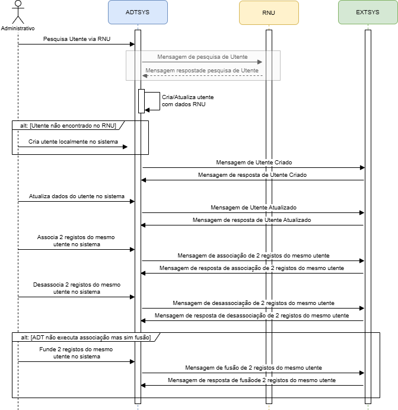
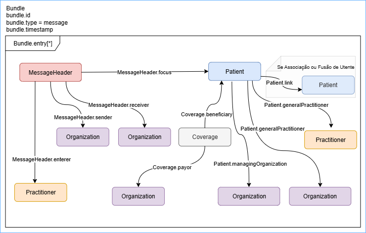
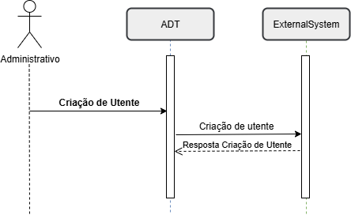
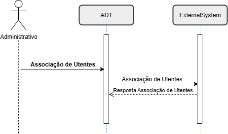

HL7 PT FHIR Implementation Guide: Example IG Release 1 | STU1
1.0.0 - STU1

HL7 PT FHIR Implementation Guide: Example IG Release 1 | STU1
1.0.0 - STU1

HL7 PT FHIR Implementation Guide: Example IG Release 1 | STU1, publicado por HL7 Portugal. Este guia não é uma publicação autorizada; é a compilação contínua para a versão 1.0.0 construída pela FHIR (HL7® FHIR® Standard) CI Build. Esta versão é baseada no conteúdo atual de https://github.com/hl7-pt/patient-admin-ig/tree/issue-9 e muda regularmente. Veja o Diretório de versões publicadas
No sistema de saúde português, utente é o termo utilizado para designar qualquer pessoa que utiliza os serviços do Serviço Nacional de Saúde (SNS). Em outras palavras, é o equivalente a “paciente” ou “beneficiário” em outros contextos como o sistema de saúde privado, mas com um sentido mais amplo, já que inclui qualquer cidadão que recorra aos cuidados de saúde, independentemente de estar doente ou não. Assim, o utente é uma pessoa que recebe ou necessita de cuidados e está sob os cuidados de um sistema ou profissional de saúde, seja por prevenção de doenças e manutenção da saúde até o diagnóstico, tratamento e acompanhamento de condições agudas ou crónicas.
Um utente é qualquer pessoa que necessita ou recebe cuidados de saúde, abrangendo desde ações de prevenção e promoção da saúde até ao diagnóstico, tratamento e acompanhamento de condições agudas ou crónicas, incluindo os indivíduos que procuram ativamente atendimento, como aqueles integrados em programas de vigilância ou prevenção.
Os utentes são o elemento central dos sistemas de saúde, podendo interagir com estes em diferentes contextos, como consultas de rotina, episódios de urgência, internamentos, entre outros. A relação entre utente e profissional de saúde deve basear-se na confiança, ética e adaptação dos cuidados às necessidades individuais. No contexto digital, a identidade do utente é representada por dados demográficos e clínicos, organizados e partilhados entre sistemas, com o objetivo de melhorar a qualidade, segurança e eficiência dos cuidados prestados.
No standard FHIR, o recurso Patient representa digitalmente o conceito de utente, permitindo a interoperabilidade de dados entre diferentes sistemas de informação e organizações. Este recurso inclui:
Dados básicos, como nome, data de nascimento, género e informações de contacto.
Identificadores únicos, como números de registo hospitalar ou o Número Nacional de Utente (NNU).
Informações adicionais opcionais, como estado civil, preferências linguísticas ou contactos de emergência.
Informação de natureza financeira, como condição face ao SNS, sub-sistemas de saúde associados, caracterização de situação económica
Este recurso é essencial para garantir que os dados de saúde sejam corretamente associados à pessoa certa, promovendo segurança e continuidade do cuidado. Recomenda-se a utilização do Número Nacional do Utente (NNU) como identificador oficial. No entanto cada implementação tem a capacidade de definir o identificador oficial na troca de informações
O NNU deve ser utilizado como identificador oficial no recurso Patient e registado como identifier com use = official.
Identificadores internos como identifier com use = usual (e. g. numero sequencial do SONHO).
Identificadores temporários podem ser registados como use = temp e substituídos assim que o NNU estiver disponível.
A ligação entre o utente e os episódios de saúde é fundamental para a administrativa e gestão clínica, sendo o utente é o ponto de origem de todos os episódios.
Os episódios de saúde estruturam e documentam as interações clínicas e administrativas, oferecendo uma visão longitudinal e integrada do histórico do indivíduo e possibilitando cuidados centrados na pessoa.
Enquanto o recurso Patient foca os dados pessoais e demográficos do utente, o conceito de episódio de saúde organiza e contextualiza as interações específicas desse utente com o sistema de saúde.
Em Portugal, a gestão administrativa dos dados dos utentes é assegurada pelo Registo Nacional de Utentes (RNU), ue atua como fonte autoritativa nacional para a identificação administrativa dos utentes no sistema de saúde..
O RNU tem como principal objetivo garantir que cada cidadão possui um identificador único (NNU), assegurando uma identificação consistente e inequívoca em todas as instituições de saúde. Este registo centraliza e normaliza os dados administrativos, facilitando a interoperabilidade entre sistemas de informação hospitalar (HIS) e outras unidades de saúde.
O NNU é essencial para ligar episódios clínicos e administrativos de diferentes organizações, promovendo continuidade e qualidade no cuidado ao utente.tes sistemas de informação hospitalar (HIS) e unidades de saúde. Este identificador nacional é fundamental para ligar episódios clínicos e administrativos de diferentes organizações de saúde, promovendo continuidade e qualidade nos cuidados.
No entanto, se o utente não está registado no RNU ou se não tem informação suficiente para validar o seu registo no RNU, o sistema ADT tem que proceder ao registo e manutenção dos dados desses utentes no sistema local, e mais tarde sendo possivel proceder à sincronização de dados com o RNU.
Outro cenário possível, é o registo de utentes não identificados no sistema ADT, que ocorre quando não é possivel identificar utentes que dão entrada no hospital sem condições de se proceder à sua identificação. Este é um cenário particular da Urgência Hospitalar.
O sr. Joaquim Silva sentiu-se mal e decidiu dirigir-se ao Hospital X para ser atendido por médico.
O funcionário administrativo do secretariado da Urgência inicia o processo de criação de um novo utente para o Joaquim Silva, com base nas limitadas informações por ele fornecidas. Nesta fase, apenas estão disponíveis detalhes básicos sobre José Silva; sua data de nascimento. O endereço da residencia e número de telefone da residencia são desconhecidos. Utilizando o aplicativo de registo, o funcionário cria a identidade inicial do utente José Silva, e o sistema ADT garante que uma mensagem de Criação do Utente seja enviada para todas as aplicações que necessitam de ter cenhecimento do novo utente, com as informações pessoais disponíveis.
Mais tarde nesse dia, são disponibilizadas informações pessoais mais detalhadas sobre o José Silva. O administrativo atualiza o registo de identidade da paciente no sistema ADT e este envia uma mensagem de Atualização do Paciente para refletir esses novos detalhes nos sistemas que necessitam destas informações.
Uma semana depois, o funcionário recebe um pedido do Centro de Imagiologia para criar um perfil temporário de um paciente para Joaquim Manuel Santos Silva. Seguindo procedimentos padrão, o funcionário insere os dados no pedido de registo, com as informações disponiveis da identidade de José Manuel Santos Silva. Após nova reconciliação, o funcionário atualiza os dados demográficos de José Manuel Santos Silva com o número nacional de utente para completar os dados de identificação do utente.
Durante uma auditoria de rotina, o funcionário descobre que os dois registos de utente José Silva e José Manuel Santos Silva representam a mesma pessoa. Para resolver esta duplicação de registos, o funcionário associa a segunda identidade à identidade de José Silva criada anteriormente no sistema. Uma mensagem de associação de utentes é então comunicada a todas as aplicações anteriores, garantindo que todos os registos estejam atualizados e consistentes.
O Diagrama de Sequência seguinte ilustra as interaçoes entre o sistema ADT e sistemas terceiros:

O fluxo representado tem em conta que os dados do utente poderão ser validados pelo serviço do Registo Nacional do Utente (RNU) e que essa é a fonte de verdade de dados do utente, e prevê que quando não é possivel encontrar ou validar o utente via RNU o administrativo tem que criar o utente localmente no sistema ADT. Do ponto de vista do sustema ADT o utente pode ser classificado em 3 categorias:
Utente validável pelo RNU -> O utente possui NNU ou atributos que permitem validar o utente via RNU e quando é pesquisado no RNU é retornado resultado com sucesso. Os dados devolvidos pelo RNU permitem que os dados do utente sejam atualizados no sistema ADT. No entanto, se a pesquisa falha fica temporariamente não validado, mas mantém a condição de validável.
Utente não validável -> O utente não possui NNU, ou os atributos existentes não permitem validar o utente via RNU.
Utente não identificado -> Não existe identificação do utente que permita validar via RNU.
As ações representadas no fluxo da gestão de identidade do utente são:
Adicionalmente podem ser necessárias ações de pesquisa baseado no perfil IHE [PDQ] Patient Demographics Query (NOTA=> remeter para outra IG):
Seguindo o perfil “Gestão de Identidade do Utente” da Estrutura Técnica de Infraestrutura de TI do IHE, propomos uma uma abordagem de mapeamento entre as mensagens HL7v2.x e mensagens FHIR correspondentes sendo necessário para tal defenir um sistema de codificação de eventos para FHIR.
Estando perante o paradigma de mensagens, de forma genérica, os recursos necessários à comunicação dos dados dos utentes são os representados no diagrama abaixo, e devem ser encapsulados num bundle que deve seguir as regras da arquitetura de Messaging. As mensagems Fhir geradas para estes eventos são sempre composta por um bundle type="message", que vai agregar todos os recursos necessários, sendo obrigatório que o primeiro recurso da lista de recursos (bundle.entry) seja o recurso MessageHeader:
O bundle tem como entradas os Recursos:

O Administrativo cria um registo de um novo utente no sistema que pode ser por via RNU ou localmente no sistema ADT. Esta ação desencadeia uma mensagem de ceriação de novo utente para o sistema externo. O sistema externo deve enviar uma resposta ao sistema ADT com o resultado do processamento aplicacional da mensagem, e com a identificação dos erros se não for processada com sucesso.

O Administrativo atualiza o registo de um utente existente no sistema. Esta atualização pode ser desencadeada por sincronização de dados com o RNU ou localmente no sistema ADT. Esta ação desencadeia uma mensagem de atualização de dados do utente para o sistema externo. O sistema externo deve enviar uma resposta ao sistema ADT com o resultado do processamento aplicacional da mensagem. O sistema externo deve enviar uma resposta ao sistema ADT com o resultado do processamento aplicacional da mensagem, e com a identificação dos erros se não for processada com sucesso.

O Administrativo identifica 2 registos no sistema que pertencem o mesmo utente e procede à ação de fusão dos 2 registos num só. Esta ação desencadeia uma mensagem de fusão de utentes para o sistema externo. O sistema externo deve enviar uma resposta ao sistema ADT com o resultado do processamento aplicacional da mensagem. O sistema externo deve enviar uma resposta ao sistema ADT com o resultado do processamento aplicacional da mensagem, e com a identificação dos erros se não for processada com sucesso.
Para fusão de utentes
O Administrativo identifica 2 registos no sistema que pertencem o mesmo utente e procede à ação de linkagem dos 2 registos. Esta ação desencadeia uma mensagem de associação de utentes para o sistema externo. O sistema externo deve enviar uma resposta ao sistema ADT com o resultado do processamento aplicacional da mensagem, e com a identificação dos erros se não for processada com sucesso.

Para associação de utentes
O Administrativo identifica que 2 registos foram erradamente associados no sistema e procede à ação de desassociação dos 2 registos. Esta ação desencadeia uma mensagem de desassociação de utentes para o sistema externo. O sistema externo deve enviar uma resposta ao sistema ADT com o resultado do processamento aplicacional da mensagem, e com a identificação dos erros se não for processada com sucesso.

Para desassociação de utentes
| Event | Mensagem^Trigger (HL7v2) | Evento Fhir |
|---|---|---|
| Criação de novo utente | ADT^A28 | PATIENT_NEW |
| Resposta da criação novo utente | ACK^A28 | PATIENT_NEW_RESPONSE |
| Atualização de dados do utente | ADT^A31 / ADT^A08 | PATIENT_UPDATE |
| Resposta da atualização de dados do utente | ACK^A31 / ACK^A08 | PATIENT_UPDATE_RESPONSE |
| Associação de utentes | ADT^A24 | PATIENT_LINK |
| Resposta da associação de utentes | ACK^A24 | PATIENT_LINK_RESPONSE |
| Desassociação de utentes | ADT^A37 | PATIENT_UNLINK |
| Resposta da desassociação de utentes | ACK^A37 | PATIENT_UNLINK_RESPONSE |
| Fusão de utentes | ADT^A40 | PATIENT_MERGE |
| Resposta da fusão de utentes | ACK^A40 | PATIENT_MERGE_RESPONSE |
| Pesquisa de utente | QBP^Q22 | PATIENT_SEARCH |
| Resposta da pesquisa de utente | RSP^K22 | PATIENT_SEARCH_RESPONSE |
| Pesquisa de dados demograficos do utente | QRY^A19 | PATIENT_DEMOGRAPHIC |
| Resposta pesquisa de dados demograficos do utente | ADR^A19 | PATIENT_DEMOGRAPHIC_RESPONSE |
Tabela 3 - Subconjunto de eventos nas mensagens FHIR de Gestão de Identidade do Utente
Os eventos aqui apresentados têm igualmente em conta o standard HL7 v2.x e a documentação pública de especificação da SPMS, que está implementada em grande parte das instituições de prestação de cuidados de Saúde em particular nos Cuidados de Saúde Hospitalares. No caso do evento de atualização de utentes as mensagens HL7 v2 defenidas pela SPMS, conforme especificação publica, aplicam a mensagem e evento ADT^A08.